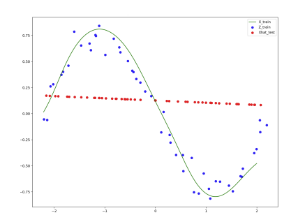

|

|
Representation Learning via Manifold Flattening and Reconstruction
Berkeley Artificial Intelligence Research (BAIR) Lab, May 2023
This work proposes an algorithm for explicitly constructing a pair of neural networks that linearize and reconstruct an embedded submanifold, from finite samples of this manifold. Our such-generated neural networks, called flattening networks (FlatNet), are theoretically interpretable, computationally feasible at scale, and generalize well to test data, a balance not typically found in manifold-based learning methods. We present empirical results and comparisons to other models on synthetic high-dimensional manifold data and 2D image data. Our code is publicly available.
SlowDNN 2023, arxiv:2305.01777
|